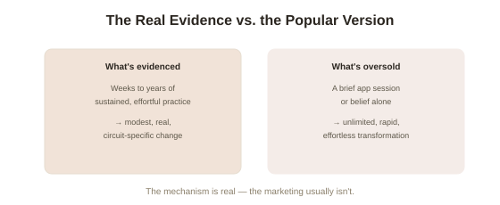

Chapter 10: The Real Limits of Neuroplasticity
Nine chapters into this arc, a pattern has held up consistently across very different domains — spatial navigation, injury recovery, deliberate skill practice, habits, meditation — and it's tempting to close on that pattern alone: sustained, effortful engagement, supported by belief, produces real, measurable brain change. That pattern is genuinely well evidenced. It is also, in the wrong hands, exactly the kind of finding that gets stretched into much bigger promises than the science actually supports. This closing chapter is dedicated entirely to the honest limits — not to undercut the previous nine chapters, but to leave this topic exactly where this library tries to leave every topic: accurate, not inflated.
"Neuroplasticity" as a marketing word
The term has been absorbed into a substantial industry of brain-training apps, supplements, and self-help programs, many invoking "rewiring your brain" as though the mere existence of plasticity as a phenomenon validates whatever specific product is being sold. It's worth being direct about the gap: the evidence in this arc supports specific, well-characterized mechanisms (LTP/LTD, myelination, limited adult neurogenesis, cortical remapping) producing specific, measurable, generally modest changes under specific, demanding conditions (sustained effort over weeks to years, not a 10-minute daily app session). A large 2016 review and subsequent FTC enforcement action against one major brain-training company found the evidence for broad, transferable cognitive improvement from commercial brain-training programs to be considerably weaker than marketing claimed — participants reliably got better at the specific trained tasks, with much less consistent evidence of improvement transferring to general cognitive ability or real-world outcomes.
Critical periods are real, and adult plasticity doesn't fully erase them
Chapter 1 was careful to say the "fixed adult brain" dogma was substantially wrong, not entirely wrong — and this distinction matters most clearly around critical periods (developmental windows, generally in childhood, during which certain brain circuits are unusually sensitive to experience and can be shaped in ways that become considerably harder to replicate later). The clearest documented case involves language acquisition: research on second-language learning consistently finds that native-like phonological and grammatical mastery is achieved far more reliably by learners who begin before puberty than by adult learners, regardless of effort invested, and similar critical-period effects show up in binocular vision development and a handful of other well-studied systems. Adult plasticity is real and exploitable, as this arc has shown, but it does not fully substitute for these earlier windows in every domain — a genuine, biologically grounded limit, not a failure of effort or belief.

Individual variation genuinely limits how far the pattern generalizes
Chapter 6 already flagged that deliberate practice explains a meaningful but incomplete share of variance in expert performance, with real individual differences accounting for the rest. This holds more broadly across this arc: not everyone shows equal capacity for structural change from equivalent effort, for reasons including genetics, age, existing brain health, and factors researchers don't yet fully understand. This isn't a reason to abandon effort — the group-level evidence for benefit from sustained practice remains strong throughout this arc — but it is a reason to hold "you can rewire your brain to do anything with enough belief and effort" as an overstatement of what the actual research licenses.
Correlation, small samples, and the ordinary caveats of a fast-moving field
Several of the specific findings covered across this arc — the meditation structural studies in Chapter 9, some of the mindset neural correlates in Chapter 7 — involve modest sample sizes and are still being actively replicated and refined, a caveat this arc has tried to flag honestly chapter by chapter rather than saving entirely for this closing note. Neuroscience as a field has, in the past decade, become considerably more careful about replication than it once was (partly in direct response to a broader replication crisis across psychology, covered elsewhere in this library), and readers encountering a dramatic new plasticity finding are well served by the same healthy skepticism this arc has tried to model throughout: real, but how big, how durable, and how well replicated?
Closing the arc: the honest, useful version of the claim
Stripped of hype, the version of "belief and effort change your brain" that survives ten chapters of scrutiny is this: sustained, effortful engagement with a specific skill, thought pattern, or practice — genuinely sustained, not brief or occasional — produces real, measurable, generally modest structural and functional brain change, concentrated specifically in the circuits that effort engages, and belief in the value and possibility of that change measurably affects whether the required effort actually happens and is sustained long enough to matter. That's a smaller, more effortful, and more honest claim than "you can rewire your brain to be anything" — and, across the evidence this arc has walked through, it also happens to be true.
Try this
Ideas for noticing or testing this in your own life.
- Next time you encounter a "rewire your brain" claim in an app, book, or ad, ask specifically what mechanism from this arc it's actually invoking — and whether the evidence behind it matches the scale of the promise being made.
- Revisit your own goal for change with this arc's honest version in mind: not "I can become anything with enough belief," but "sustained, specific, effortful engagement, sustained by genuine belief in its value, reliably produces real, if gradual and bounded, change" — a less dramatic but considerably more trustworthy starting point.
Worth pulling on?
A few loose threads from this chapter — if any of these genuinely grab you, that's a good sign of where to go next.
- The broader replication crisis this chapter references, and how it reshaped psychology's standards of evidence, is covered directly elsewhere in this library. → Already in the library: Philosophy of Science covers the replication crisis and its effect on scientific credibility more broadly.
- The specific mechanics of deliberate practice's real but bounded contribution to expert performance are covered in full elsewhere in this library. → Already in the library: Expertise and Deliberate Practice covers the Ericsson-Hambrick debate this chapter references in more depth.